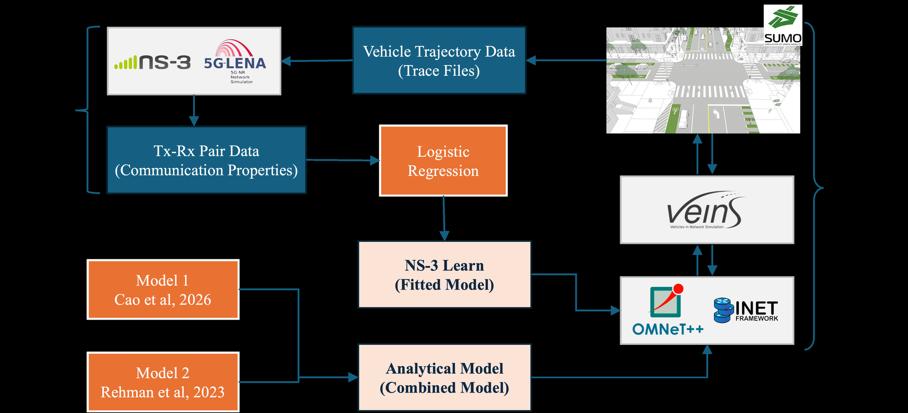
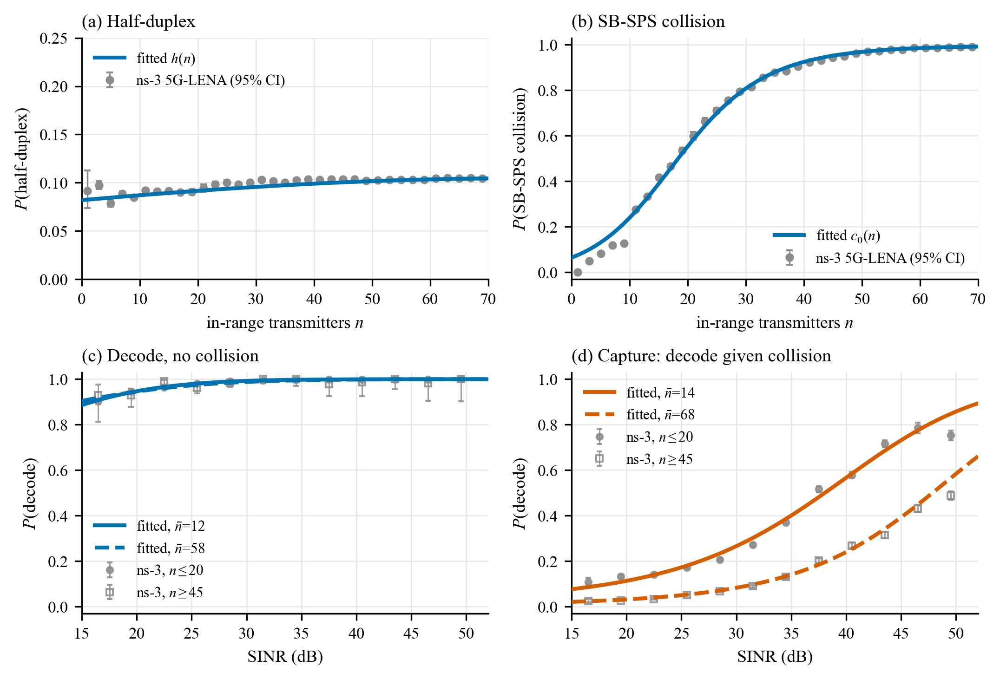
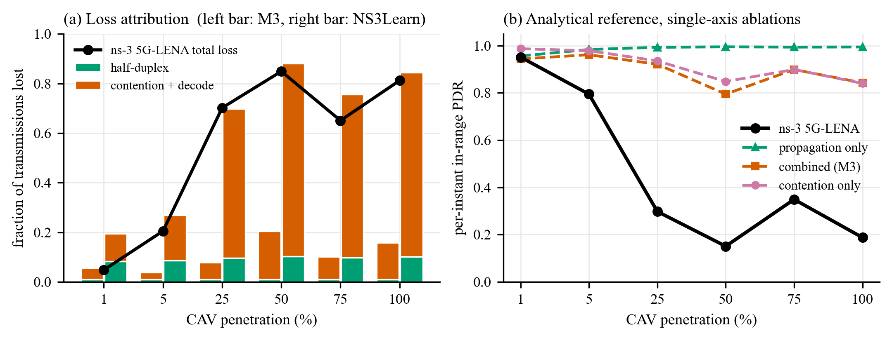
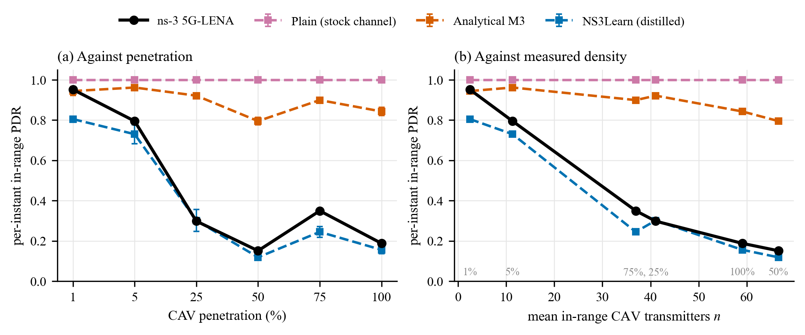

Ignoring radio resource competition in 5G sidelink Mode-2 inflates delivery rates in dense traffic. NS3Learn distills full-protocol realism into a closed-form model that ports between simulators without reimplementation.
Standard channel models skip resource competition, so dense-traffic simulations report delivery rates no real road would see — and downstream traffic conclusions inherit the error.
Ten and a half million labeled outcomes across two signalized urban networks, six penetration levels from one to one hundred percent, and five seeds per condition compress into half-duplex, collision, capture, and decoding terms.
Against the full simulator the cascade deviates 0.06 versus 0.44 and 0.55 for alternatives; plugged into traffic sims it reverses speed trends and more than doubles hard-braking predictions.




Source table · Fitted Coefficients of the Distilled Reception Cascade (3 rows)
| ^(nc)_0–4 | Decode, no collision, Eq. eq:decode | 0.00686, 0.09830, 0.00231, 0.01918, -9.92\!\!10^-4 |
|---|---|---|
| ^(cc)_0–4 | Decode, collision (capture), Eq. eq:decode | -3.06368, 0.04412, 1.22\!\!10^-3, -0.02376, -6.80\!\!10^-5 |
| Assumed, not fitted: the reference implementation bounds no receiver processing | Decode, collision (capture), Eq. eq:decode | |
| C_obu,W,s | OBU capacity, window, drop slope, Eq. eq:obu | 600 pkt/s, 1 s, 2.0 |
Abstract
Connected-vehicle safety evaluations rely on coupled traffic and network simulations, but standard channel models ignore radio resource competition in 5G NR sidelink Mode-2, reporting unrealistically high message delivery in dense traffic. This study introduces resource-competition losses without requiring full protocol reimplementation. We labeled 10.5 million reception outcomes from ns-3 5G-LENA traces (calibrated on 3GPP scenarios and driven by SUMO trajectories) to fit NS3Learn - a closed-form model capturing half-duplex loss, scheduling collisions, receiver capture, and decoding. Evaluation spanned two signalized urban networks, six penetration levels (1-100%), and five random seeds per condition. NS3Learn achieved a mean absolute deviation of 0.06 in per-instant delivery compared to ns-3 5G-LENA, outperforming alternative models (0.44 and 0.55 deviation). Fitted parameters transferred to a distinct intersection with only 20% additional error. Crucially, using realistic communication models reversed simulated traffic speed trends and more than doubled predicted hard-braking events. The framework transfers reception realism between simulators via model distillation instead of full reimplementation. Every stage maps directly to an explicit physical mechanism. Researchers and transportation agencies can maintain existing simulation pipelines while accurately accounting for dense-traffic packet loss and denial-of-service impacts. Adapting to new radio configurations requires only offline refitting rather than code modification.